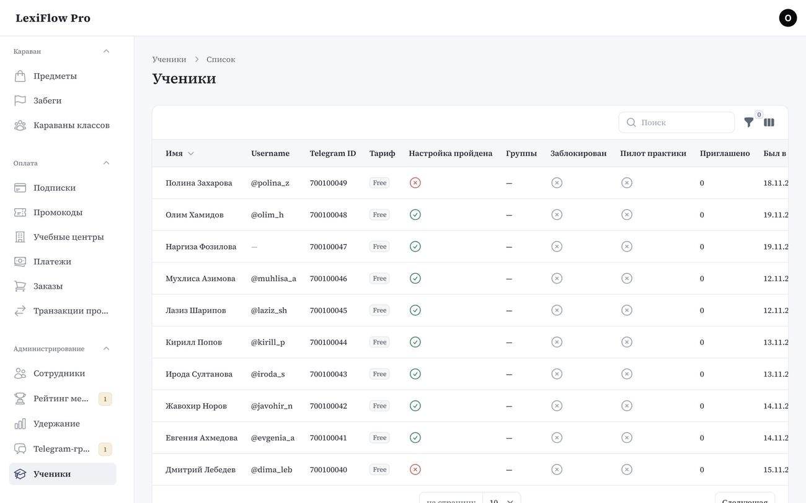
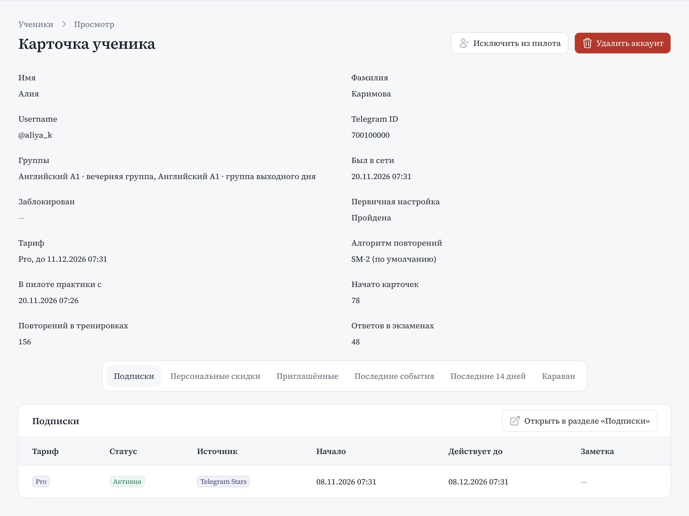
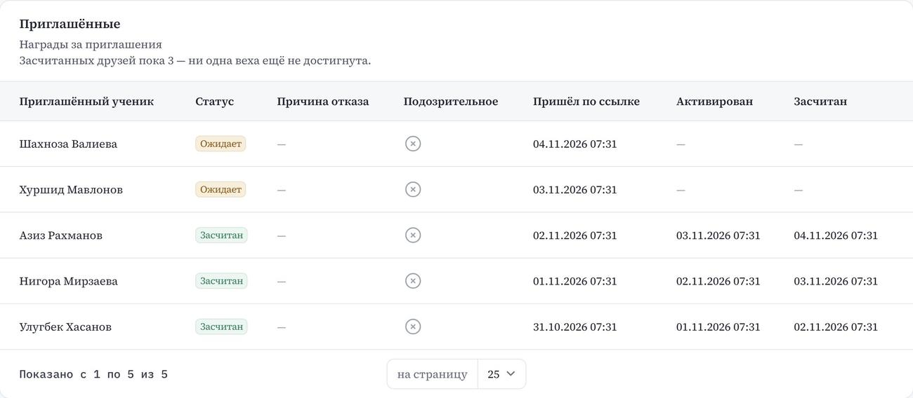
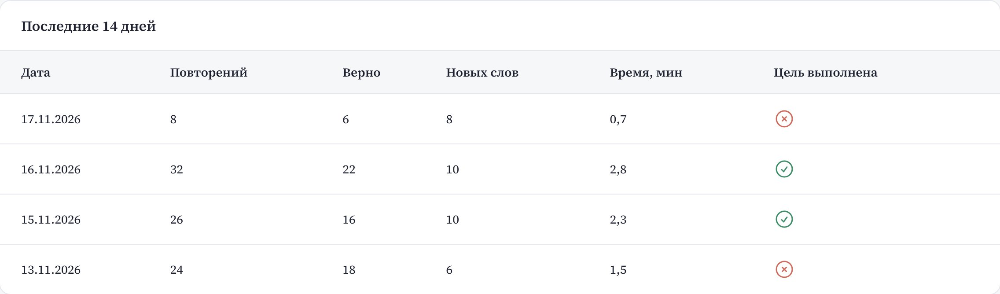
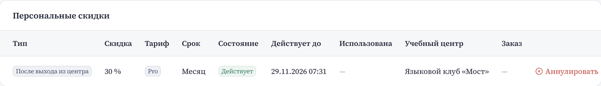
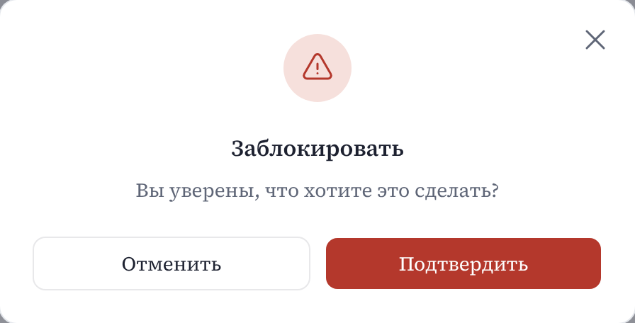
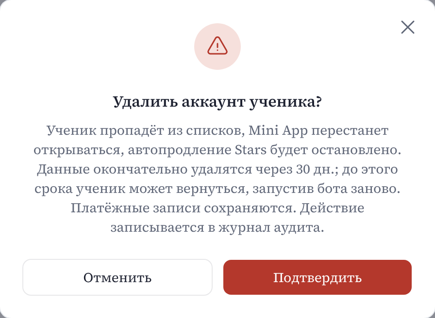
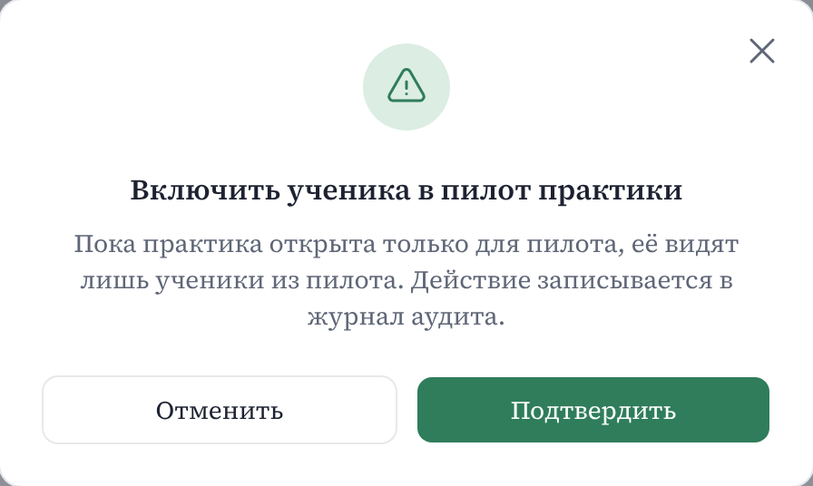
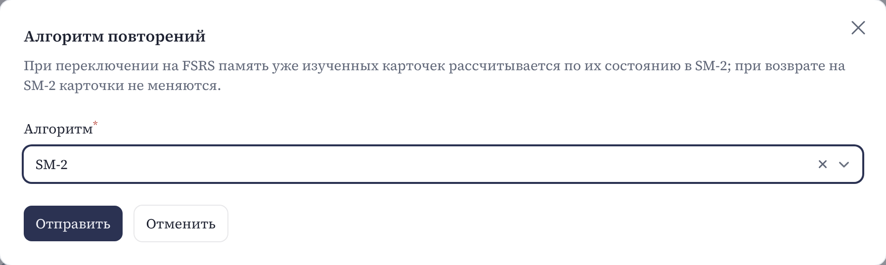

Раздел Администрирование → Ученики — все, кто хотя бы раз запускал бота или мини-приложение. Здесь находят ученика по имени или Telegram ID, смотрят его тариф, подписки, активность и приглашения, блокируют, удаляют аккаунт по просьбе, включают в пилот практики. Учитель видит только активных участников своих групп и без действий (глава «Что видит учитель»).

Кнопка Просмотр открывает карточку: имя, username, Telegram ID, группы, когда был в сети, блокировка, первичная настройка, действующий тариф (с датой окончания, а для Pro от центра — номером центра), алгоритм повторений, дата включения в пилот практики, сколько карточек начато, сколько повторений в тренировках и ответов в экзаменах.

| Вкладка | Что в ней |
|---|---|
| Подписки | собственные подписки ученика: тариф, статус, источник, начало, «Действует до», заметка. Кнопка Открыть в разделе «Подписки» ведёт туда, где выдают и отзывают Pro. Pro от центра — это подписка центра, здесь её нет |
| Персональные скидки | скидки, которые получил ученик (например, 30 % на первый месяц после выхода из центра): тип, размер, состояние, срок, центр и заказ. Кнопка Аннулировать у действующей скидки сразу её отменяет |
| Приглашённые | над таблицей — вехи наград за приглашения; ниже — приглашённые друзья и их статус: «Ожидает», «Активирован», «Засчитан», «Отклонён». Подозрительные приглашения (всплеск приглашений за сутки) помечены; для них есть Снять пометку и Отклонить |
| Последние события | последние 50 событий ученика в приложении. Вход в приложение скрыт, его можно выбрать в фильтре «Событие» |
| Последние 14 дней | по дням: повторения, верные ответы, новые слова, время, выполнена ли цель дня |
| Караван | кошелёк игры: баланс монет, заработано, потрачено, билеты и последние 50 проводок; кнопки Начислить монеты, Списать монеты, Выдать билеты (глава «Игра «Караван»») |



Блокировка и алгоритм повторений — кнопки в строке списка. Удаление аккаунта и пилот практики — и в строке, и вверху карточки. Все действия спрашивают подтверждение и записываются в журнал аудита.
Заблокированный ученик больше не может открыть мини-приложение, напоминания ему не приходят. Прогресс сохраняется. Разблокировать возвращает доступ сразу.

Используйте, когда ученик попросил удалить его данные (например, написал в поддержку). Сам ученик может сделать то же в мини-приложении или командой бота.

/start) или открыв мини-приложение: аккаунт восстановится как был. Кнопки «восстановить» в панели нет./start создаст нового ученика с нуля.Платёжные записи при удалении сохраняются. В разделах «Платежи», «Заказы» и «Подписки» такой ученик показывается с пометкой «(удалён)» и данными плательщика на момент оплаты. Заблокированный ученик не может удалить себя сам, а администратор — может.
Включить в пилот практики / Исключить из пилота. Пока практика открыта только для пилота, её видят лишь ученики из пилота.

Переключает ученика между алгоритмами интервальных повторений SM-2 и FSRS. При переходе на FSRS память уже изученных карточек рассчитывается по их состоянию в SM-2; при возврате на SM-2 карточки не меняются. Без особой причины (эксперимент, просьба разработчиков) алгоритм не меняйте.

| Вопрос | Где смотреть |
|---|---|
| «Я оплатил, а Pro нет» | карточка → «Тариф» и вкладка «Подписки»; затем раздел «Платежи» (глава «Платежи, заказы и транзакции») |
| «Не открывается приложение» | колонка «Заблокирован»; если ученика нет в списке — возможно, он удалил аккаунт: пусть снова запустит бота |
| «Мне не засчитали друга» | вкладка «Приглашённые»: статус и пометка подозрительного |
| «Пропали монеты в игре» | вкладка «Караван»: проводки с причинами |
Создать ученика вручную или изменить его имя в панели нельзя: ученик появляется сам, когда запускает бота, а имя и username берутся из Telegram.